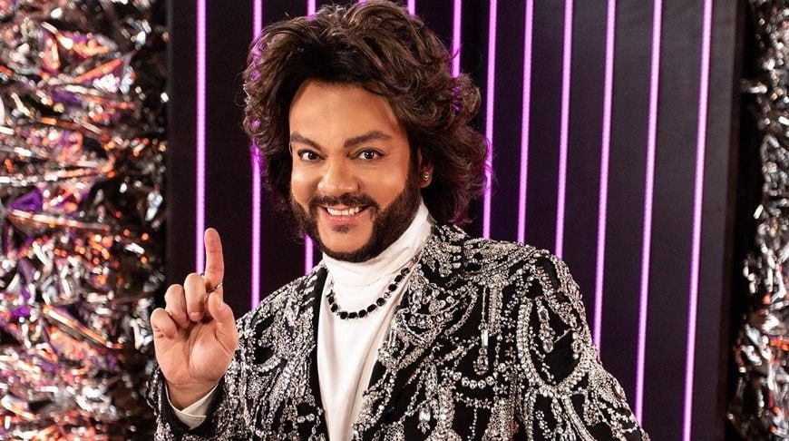

Philipp Kirkorov told about the addition to his family on Instagram

The famous artist Philipp Kirkorov posted a new post on Instagram, which impressed and touched the users of the network.
The artist showed several photos with his children, and also shared amazing news. The singer's family has grown. "A fruitful December in the Kirkorov family! Yes! We have an addition to the family!" - the musician wrote.
It turned out that Philipp Kirkorov became the owner of two little Dalmatians. They were given to the star's daughter for her birthday, because the celebration was held in the style of the Disney film "Cruella».
Scientists Create a New Molecule — an Alternative to Antibiotics

The researchers set a task to find a substance that blocks Mfd. Using computer modeling, they analyzed a library of almost five million molecules for the ability to bind to the active center of Mfd — the site where the ATP molecule, the energy source for Mfd, is attached to the protein. Virtual screening identified 95 promising candidates.
Following laboratory tests showed that one molecule, called NM102, most effectively inhibits Mfd activity — by 85%. Further experiments confirmed that NM102 binds specifically to the ATP-binding site of the Mfd protein and competes with ATP for this place. The affinity of NM102 for Mfd turned out to be even higher than that of ATP itself. The test showed that NM102 specifically acts on Mfd and does not affect the work of similar ATP-dependent human proteins or other bacterial proteins.
Dmitry Khaladzhi surprised again: a Volga ran over him, and a girl lifted a weight 80 times on its hood.

The number of lifts is symbolic: it is dedicated to the 80 years that have passed since the Victory in the Great Patriotic War.
The strongman feels fine after this. As he himself said, he was inspired by the date to which he timed his performance.
The highlight of the act is that before he lay down on the platform, broken glass was poured under Dmitry Khaladzhi's back.

 Poodels
Poodels